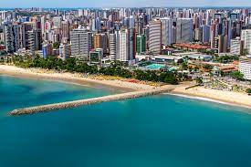

Apelido
O apelido dela é Madu desde que ela nasceu, e as vezes ela não vai responder se você a chamar por Maria Eduarda,
Da onde vem
Nasceu em Guaratinguetá, uma cidade do interior de São Paulo. Se mudou para Fortaleza em 2014 e se apaixonou pela comida cearense.

Formação
Maria Eduarda é estudante de Ciência de Computação na USP
Hobbies
Jogos
O último jogo que jogou foi Zelda Breath of the Wild
Ela aconselha todos a comprar e jogarem:

Ela ainda tem que comprar a extensão do jogo, que infelizmente é quase o mesmo preço do jogo.
Músicas
Ela tem passado a ouvir músicas japonesas para ajudar no aprendizado de japonês.
Comidas
Infelizmente por causa da pandemia, ela não pode ir em restaurantes. Mas antigamente, ela gostava de conhecer novos restaurantes e novos pratos.
Ela aconselha a todos uma hamburgueria chamada Sandwish em São Carlos.
Um dos pratos preferidos dela é sushi.
Desejos
Atualmente, ela quer voltar para São Carlos pois achou um restaurante de comida coreana
muito bom e não pode provar (pra quem quiser o link é este ).
Ela também quer acabar a faculdade no tempo previsto, apesar
de se sentir triste por estar há 1 ano em EAD. Ela quer também aprender bastante
sobre desenvolvimento web e passar na disciplina.